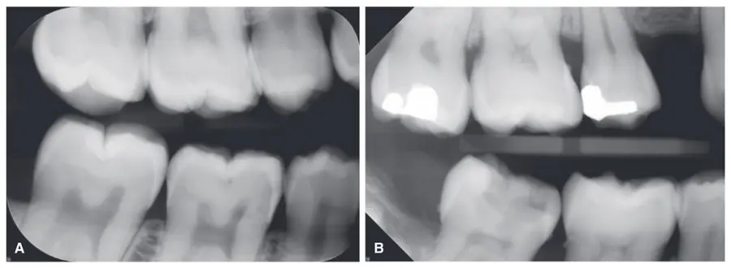
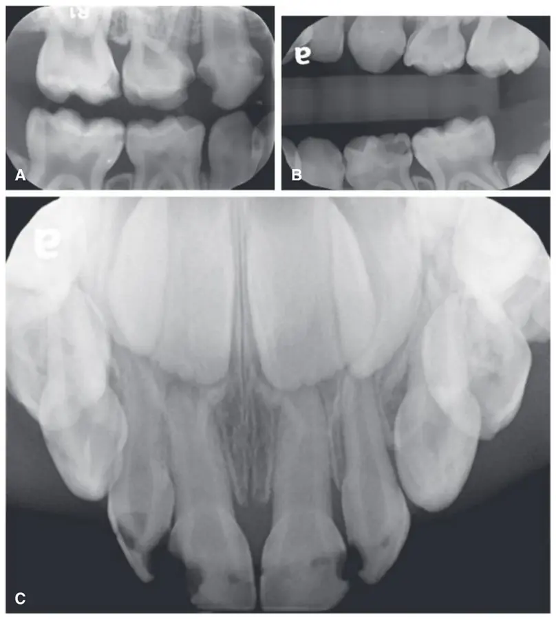

نسخه استخراجشده؛ ترجمه یا تأیید علمی انجام نشده است. وضعیت: captured
پوسیدگی اکلوزال یک تفاوت مهم با پروگزیمال دارد: اینجا چشمِ تو از رادیوگرافی بهتر است.

صریح بگوییم: «تقریباً غیرممکن است که پوسیدگی اکلوزالِ محدود به مینا را روی رادیوگرافی کشف کرد. مینا صرفاً بیش از حد ضخیم است.» و علت دومش: «چون ضایعات اکلوزال درون قاعدهی پیت و فیشور سطحی رخ میدهند، اغلب سوپرایمپوزیشن مینای سالم پیرامون وجود دارد که به این نتایج منفی کاذب میانجامد».
و نتیجه: «مطالعات متعددی نشان دادهاند که معاینهی بالینی از رادیوگرافی در کشف این ضایعات اکلوزال کوچک دقیقتر است. بهمحض شک به پوسیدگی اکلوزال، باید تصویری برای ارزیابی عمق ضایعه گرفته شود.» یعنی تقسیم کار: بالین برای کشف، تصویر برای عمق.
شکل ضایعهی اکلوزال: «بهمحض رسیدن ضایعه به عاج، بهجای ساختن شکل مثلثی، شکلی نیمدایرهایتر میسازد، با قاعدهی پهن نیمدایره روی DEJ» و «اغلب متمرکز بر پیت اکلوزال». پوسیدگی اکلوزال پس از نفوذ به مینا «ابتدا در امتداد DEJ پخش میشود، پیش از ورود به عاج زیرین».
و در مورد کاویتاسیون اکلوزال: با پخش شدن ضایعه در عاج زیرین و ضعیف شدن دندان، «ممکن است عاج کافی برای تحمل نیروهای جویدن باقی نماند و این به کاویتاسیون سطح بینجامد». حتی وقتی بالینی آشکار است، گرفتن تصویر لازم است: «احتمالاً هم یک بایتوینگ برای ارزیابی عمق و هم یک پریاپیکال برای ارزیابی ناحیهی آپیکال». و: «حتی بدون کاویتاسیون بالینی، پوسیدگی اکلوزالی که به عاج رسیده باشد به احتمال زیاد نیازمند درمان است.»
سطوح باکال و لینگوال: پوسیدگی این سطوح در پیت و فیشور یا روی سطوح صاف نزدیک لثه ایجاد میشود. ضایعات این سطوح «معمولاً شکل دایرهای یا بیضی دارند و واضحمرزاند، و ساختار دندانی پیرامونشان دستنخورده است».
و مشکل بومیشان: «در دیدن این ضایعات روی یک تصویر واحد، غیرممکن است که ضایعه را روی سطح باکال یا لینگوال موضعی کرد. تصویر دومی با زاویهی افقی متفاوت میتواند به این تعیین کمک کند» — همان تکنیک جابهجایی تیوب یا قاعدهی جسم باکال.
و تفکیکشان از ضایعهی اکلوزال: وقتی ضایعهی باکال یا لینگوال نزدیک سطح اکلوزال باشد، به دلیل سوپرایمپوزیشن با ضایعهی اکلوزال اشتباه میشود. ولی «ضایعات اکلوزال معمولاً گستردهترند، به این اندازه واضحمرز نیستند، و یک خط رادیولوسنت در مینای اکلوزال نشان میدهند».
سطوح ریشه: در بیماران با تحلیل لثه یا تحلیل استخوان پریودنتال دیده میشود. «سمنتوم نرمتر و نازکتر از میناست، که سبب میشود پوسیدگی سریعتر پیشرفت کند.»
و سه نشانه برای تفکیک پوسیدگی ریشه از سرویکال برناوت: «نخست، وقتی هیچ تحلیل استخوانی پیرامون دندان نیست، بسیار محتمل است که رادیولوسنسی لبهی ریشه صرفاً برناوت باشد. افزون بر آن، در پوسیدگی، معاینهی بالینی بینظمی یا کاویتاسیون نشان میدهد؛ در برناوت سطح ریشه دستنخورده است. سرانجام، شکل رادیولوسنسی برناوت اغلب با آناتومی دندان توضیح داده میشود.» و خبر خوب: «خوشبختانه بیشتر ضایعات ریشهای میتوانند و باید بالینی کشف شوند.»
پوسیدگی رمپنت اصطلاحی است برای «پیشرفت سریع با درگیری شدید و گسترده». بیشتر در «کودکان خردسالی که عادات بهداشتی ضعیف را با عادات غذایی ضعیف ترکیب کردهاند» دیده میشود — مثلاً خوابیدن با شیشهی شیر یا آبمیوه. افزایش دسترسی به فلوراید در آب آشامیدنی و سیستمهای فلوراید موضعی به کنترل پوسیدگی در این کودکان کمک کرده است.

و در بزرگسالان؟ «ضایعات پوسیدگی متعدد در بیماران بزرگسال با خشکی دهان دیده میشود. این اغلب پس از رادیوتراپی سرطان سر و گردن رخ میدهد.»
سازوکارش: «از دست رفتن عملکرد غدد بزاقی اصلی، توانایی غدد در ترشح بزاق کافی برای بافر کردن اثر اسیدهای باکتریایی را کاهش میدهد یا از بین میبرد.» و نتیجهاش روی تصویر: «پوسیدگی پیشرفته و منتشر که سطوح صاف و دندانهایی را درگیر میکند که معمولاً پوسیدگی نمیگیرند.» این ضایعات، که اغلب «پوسیدگی پرتویی» نامیده میشوند، «عمدتاً پوسیدگی سطح صاف نزدیک نواحی سرویکال دندانها هستند». بهداشت بینقص همراه با فلوراید موضعی و جایگزین بزاق میتواند بخشی از اثر خشکی دهان را خنثی کند.
دو نوع پوسیدگی مرتبط با ترمیم — تفاوتشان را با هم قاطی نکن:
دشواری کشف پوسیدگی عودکنندهی بیندندانی: «اگر تصویر با زاویهی عمودی نادرست گرفته شود، ترمیم میتواند ضایعهی عودکننده را بپوشاند یا پنهان کند.» پس «حیاتی است که ناحیه بالینی بهدقت معاینه شود و تصاویر باکیفیتی گرفته شود که در آنها پرتو بهینه جهتگیری شده تا سطح مشترک دندان و ترمیم دیده شود. این با یک بایتوینگ بهترین حاصل را میدهد. در صورت تردید، تصویر دومی با زاویهی متفاوت گرفته شود.»
ابزارهای تشخیصی جایگزین: فلورسانس القایی با نور، لیزر، ترانسایلومینیشن و رسانایی الکتریکی. «سیستمهای فلورسانس القایی با نور برای شناسایی دمینرالیزاسیون سطوح صاف به کار میروند» و بقیه بیشتر روی اکلوزال و بیندندانی. این سیستمها یک عدد یا مقدار میدهند که وجود یا نبود دمینرالیزاسیون را نشان دهد.
ولی محدودیتی دارند: «برخی از این سیستمها ممکن است در شناسایی ضایعات زیر و پیرامون ترمیمهای دندانی دشواری داشته باشند. فعلاً باید مکمل معاینات تصویربرداری باشند.»
و هوش مصنوعی؟ «تازهترین مطالعات بهبود دقت تشخیصی را نشان میدهند وقتی دندانپزشک با هوش مصنوعی همراه شود، در مقایسه با دندانپزشک بهتنهایی — هرچند پیامدهای بلندمدت (نگهداری دندانها) روشن نیست.» و حکم: «مثل سایر ابزارهای تشخیصی، هوش مصنوعی باید بهعنوان یک آزمون کمکی به کار رود و تصمیمگیری دندانپزشک را آگاه کند، نه جایگزینش شود.»